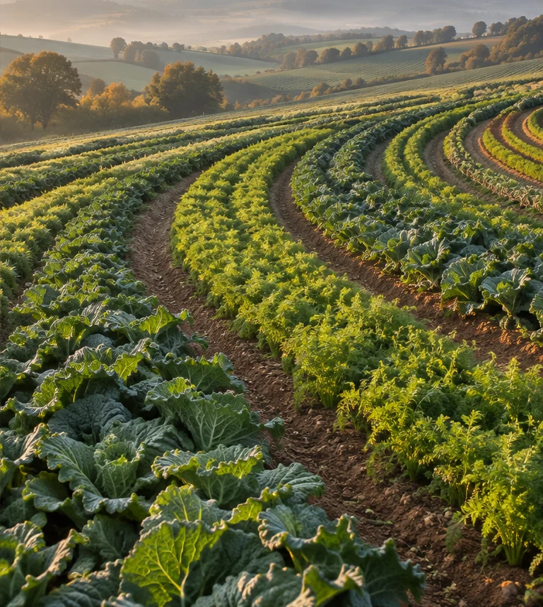
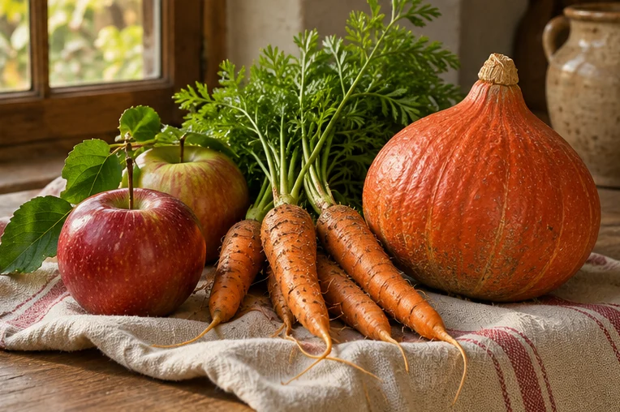

Bien choisir
au marché.
Le calendrier indique-t-il la date de récolte ?
Les mois indiquent une période habituelle de consommation. La récolte varie selon la région, la variété et la météo. Des pommes récoltées en automne peuvent être consommées plusieurs mois plus tard après stockage.
Comment vérifier l’origine d’un produit ?
Lisez le pays d’origine sur l’étiquette ou l’ardoise. Au marché, demandez le lieu de récolte. Une AOP ou une IGP peut préciser l’origine de certaines variétés.
Comment lire les chiffres nutritionnels ?
Les valeurs Ciqual décrivent 100 g de la partie comestible, généralement crue. La quantité consommée, la variété et la cuisson font varier vos apports.
Le bon geste
Choisissez un fruit ou un légume pour savoir comment le reconnaître, le conserver et l’utiliser.
Cuisiner jusqu’à la dernière bouchée
- Cuisinez les fruits bien mûrs
- Des pommes et des poires encore saines deviennent une compote, une garniture de crumble ou une sauce pour le yaourt.
- Utilisez les fanes comestibles
- Des fanes de carottes fraîches et bien lavées peuvent parfumer un bouillon ou se mixer en pesto.
- Gardez les légumes les plus robustes pour la fin
- Prévoyez les fraises et les figues en premier, puis les carottes, les betteraves ou les courges entières.
